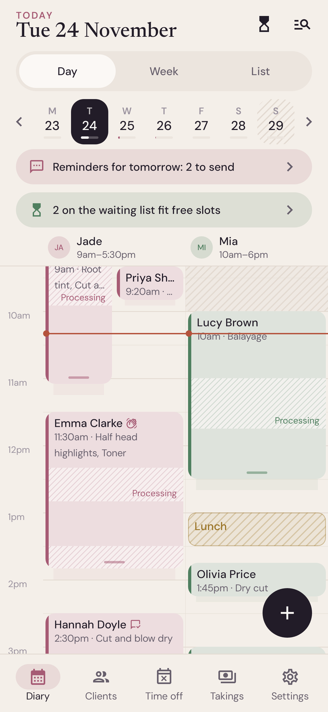
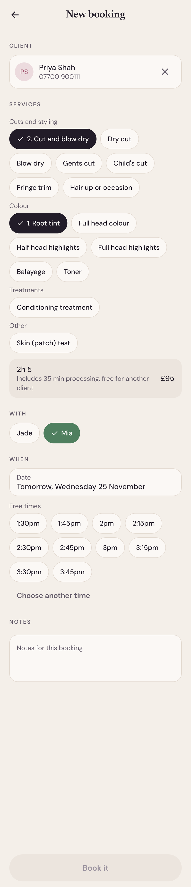
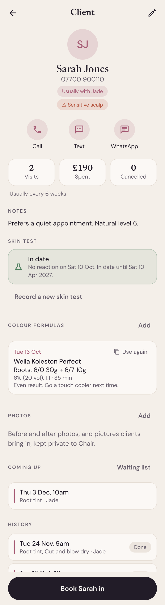
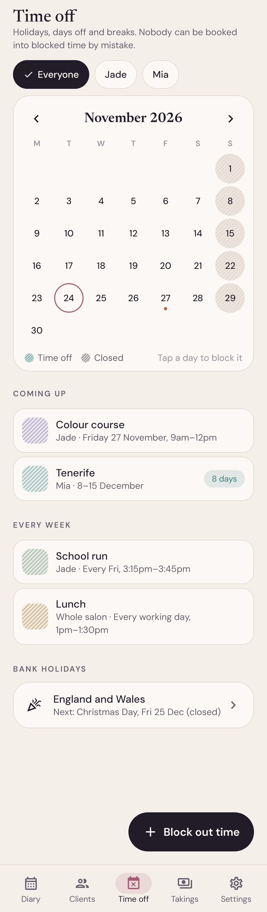
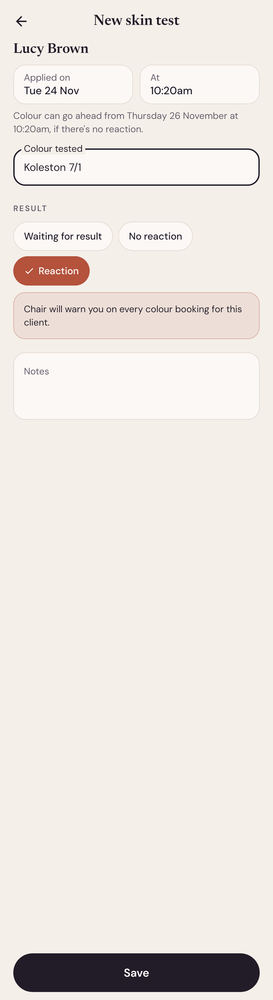
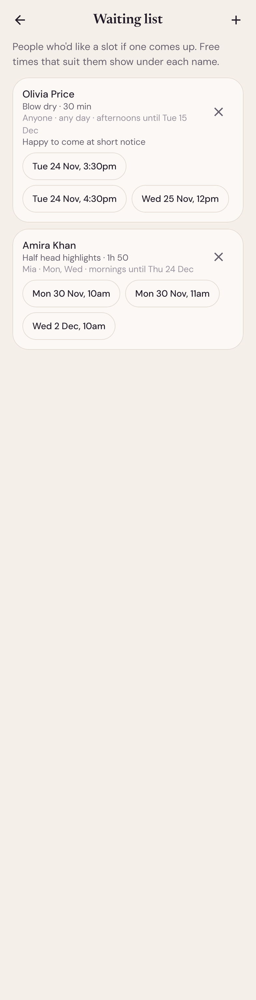
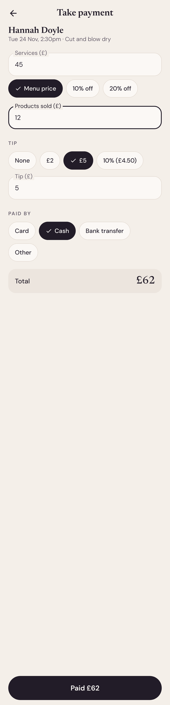
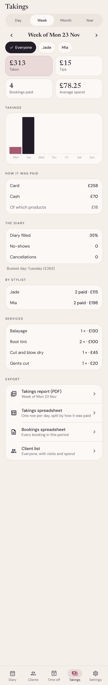

The appointment diary hairdressers deserve.
Chair is a salon diary for Android that understands how hair is really done. Processing time stays free for other clients, holidays and bank holidays are blanked out in seconds, and every client's formulas, skin tests and photos are a tap away.
It is free, with no subscription, no per-stylist charge, no fees on new clients and no adverts. Everything stays on your phone, encrypted, and the app cannot go online.
Download for AndroidHow to install
- Version 1.0.0
- Android 8 or later
- 2.4 MB
Free, with nothing to unlock. No adverts, no account with the developer, no tracking. Compare or read the release notes.
Chrome may say the file might be harmful. It shows this for app files that do not come from Google Play. Choose Download anyway.

- No subscriptionNo per-person charge and no fees on new clients.
- No advertsNone in the app and none on this site.
- EncryptedClient details kept only on your phone.
- OfflineThe app cannot go online.
A look inside
These are the real screens, drawn from the app's own code with made-up clients. Swipe or scroll sideways to see them all.







How it works
Setting up takes a couple of minutes: your hours, your services and your prices, with a ready-made start you can change.
Book
Tap +, pick the client and the services. Chair works out the length, the price and the processing time, and warns you about clashes and skin tests.
Blank out
In Time off, block a holiday, a training day or every lunch. Chair shows any bookings in the way.
Get paid
Tap Take payment when the client leaves, rebook them in one tap, and see the takings add up.
Everything is in, and all of it is free
Nothing below is held back for a paid tier, because there is no paid tier.
The diary
- Stylists side by side
- Each stylist in their own colour, by day, week or list.
- Processing time left free
- While a colour develops, the stylist can take another client.
- Time off and bank holidays
- Holidays, training and repeating blocks, and UK bank holidays shaded in seconds.
- Clashes and gaps
- Chair warns about double bookings and finds the next free slot.
Clients
- Everything in one place
- Visits, spend, notes, photos, colour formulas and skin tests.
- A waiting list
- Who wants an earlier slot, offered the gaps that suit them.
- Reminders from your own phone
- A text or WhatsApp message, worded your way.
Money
- Take payment
- Card, cash or transfer, with tips and products, and rebook in one tap.
- Takings
- Week and month, how people paid, and how full the diary was, with PDF and spreadsheet reports.
Private by design
- Encrypted on your phone
- Locked with a PIN or fingerprint. The app cannot go online.
- Backup you control
- A password-locked backup file, and import from a spreadsheet or your contacts.
Your clients' details stay with you
No servers
Chair has no accounts and no servers. Nothing about you or your clients reaches the developer.
Encrypted and locked
Everything is encrypted on the phone, behind a PIN or fingerprint.
No ads, no tracking
There is no advertising, analytics or tracking, in the app or on this site.
Installing and updating
Chair is not on Google Play, so your phone asks a couple of extra questions the first time.
Download the app file
Tap Download on your phone. The file is called Chair.apk and is about 2.4 MB. If Chrome says the file might be harmful, choose Download anyway.
Allow the install
Open the file. The first time, Android asks you to allow your browser to install apps. Allow it, go back and tap Install. If Google Play Protect steps in, choose More details, then Install anyway.
Updating later
Chair tells you when a newer version is out. Install the new file over the old one and everything you have saved is kept.
Version 1.0.0, released 21 November 2026. See the release notes, or check your download.
Questions
Is Chair really free?
Yes. There is no paid version, no subscription, no per-stylist charge, no fee on new clients and no adverts. Nothing in the app is locked.
Is it on Google Play?
No. Chair is a personal project and is downloaded from this site as an Android app file. It needs Android 8 or later, which covers almost every phone in use.
Can my clients book online?
No. Chair is the salon's own diary, kept on your phone. Clients book with you by phone, message or in person, as most still do. If you need online booking, the apps on the compare page offer it, for a monthly fee.
Does it need the internet?
No. The app does not ask Android for internet access at all, so it cannot go online. Texts go out through your own phone like any other text, and WhatsApp messages open in WhatsApp for you to send.
Where are my clients' details kept?
Only on your phone, in the app's private storage, encrypted with a key held by Android. Nothing is uploaded, and the developer receives nothing.
Can several stylists use it?
Chair keeps the diary for the whole salon, with each stylist's own hours, time off and colour. It runs on one phone or tablet, so it suits a salon that keeps one diary at the desk, or a stylist working on their own.
Do automatic texts cost anything?
They are sent as ordinary texts from your phone, so they cost whatever your phone contract charges for a text, which is usually nothing extra on a plan with unlimited texts. Chair adds no charge of its own.
What about GDPR?
Client details stay on your phone and are never shared. Chair helps you meet your duties: it can give a client a copy of their record, forget a client completely, find clients you no longer need to keep, and it includes a privacy notice you can show clients. You are still responsible for how your salon uses the details.
How do I move to a new phone?
In Settings, open Backup, set a backup password and save a backup file. Install Chair on the new phone, choose Restore from a backup and enter the same password. Photos come too.
What if I forget my PIN?
There is no way round the PIN, not even for the developer. You can clear the app's storage in your phone's settings, which deletes everything, and then restore your latest backup.
Who made it?
Chair is made by Jonathan Jackson, an independent developer in the United Kingdom. It is not connected with any other salon software company.
Your diary, your clients, and nothing to pay
Free, with no adverts and nothing to unlock. Made by the developer of several other free Android apps: see them all.